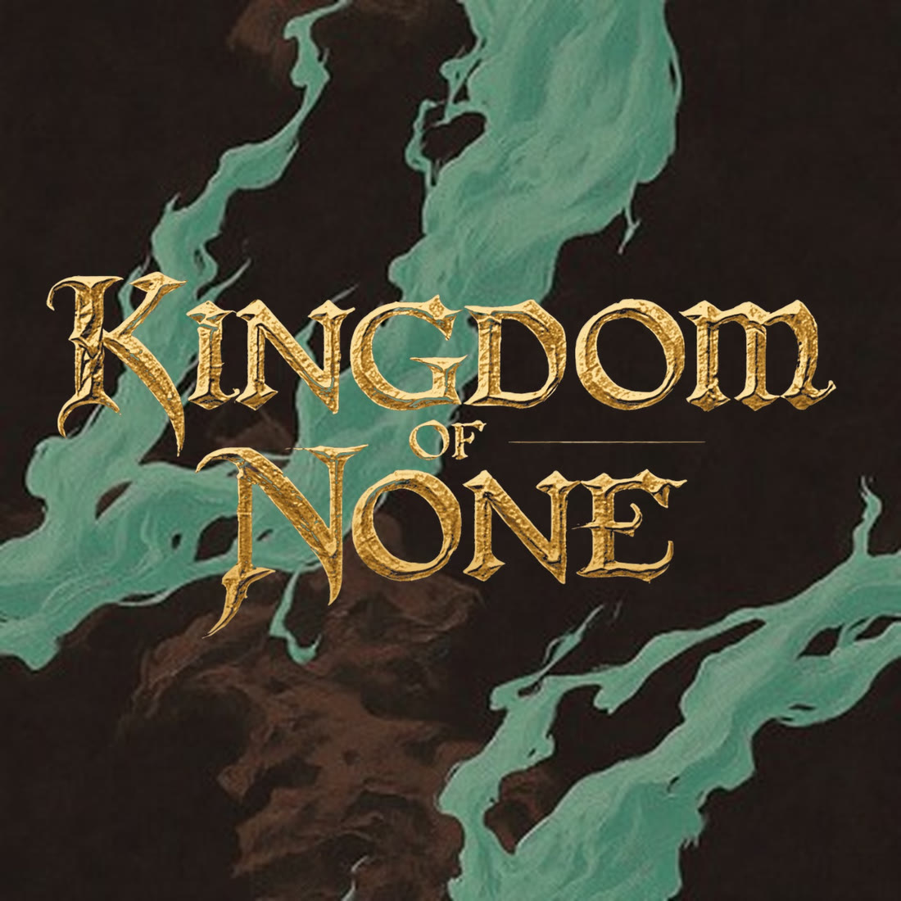
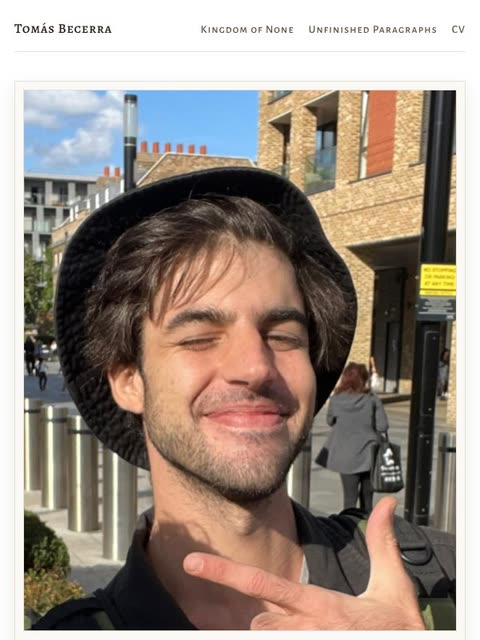
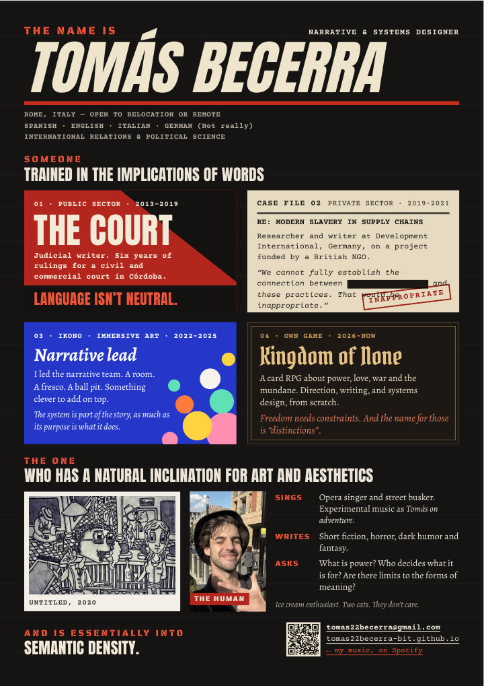
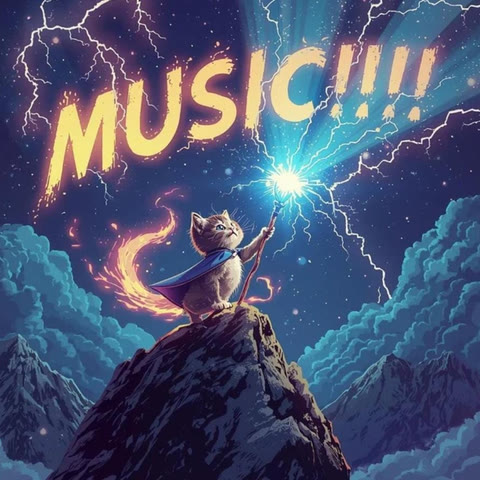
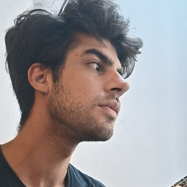
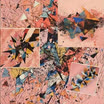
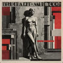

Tomás Becerra

Kingdom of NoneA turn-based roguelite card RPG about power, love, war and the mundane. In development. Unfinished ParagraphsShort fiction. Horror, dark fantasy, sci-fi.
The personAn essay on meaning and constraints4-minute read
CVThe road so far
Tomás on adventure
Electric music experiments.2025
Compass reachTomás on adventure
Fancy a conversation? 🍺tomas22becerra@gmail.com

